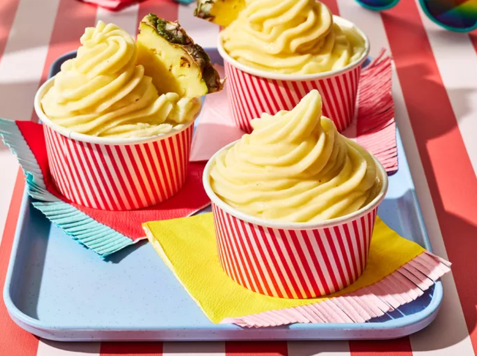

Dole Whip

Description
Make Dole Whip at home with this copycat recipe inspired by the signature treat from Disney's Enchanted Tiki Room.
Excellent on a hot day as a smoothie and even better when frozen as a sorbet.
Ingredients (10+ Servings)
- 2 (20oz) cans crushed pinapple, drained
- 1/2 cups heavy whipping cream
- 1/3 cup white sugar
- 2 tablespoons lemon juice
- 2 tablespoons lime juice
Steps
- Blend pinapple, cream, sugar, lemon juice, and lime together in a blender until smooth; freeze until slushy consistency, 1 to 2 hours.
- Transfer to an airtight container and freeze until firm, about 1 hour. Scoop into bowls, or, spoon into a piping bad fitted with a tip and pipe into bowls. Serve immediately.
Home